Full Quaternion Attitude Control and Differential-Flatness Trajectory Tracking for a Quadrotor
A Project Report - Bachelor of Technology, Artificial Intelligence Engineering, School of Artificial Intelligence, Amrita School of Engineering, Coimbatore, Amrita Vishwa Vidyapeetham. Group 12: B Sainath (CB.SC.U4AIE24309), Manohar Paturi (CB.SC.U4AIE24339), K Pushpak (CB.SC.U4AIE24328), Sai Krishna (CB.SC.U4AIE24308), Vishal (CB.SC.U4AIE24363).
Base papers: [1] E. Fresk, G. Nikolakopoulos, "Full Quaternion Based Attitude Control for a Quadrotor", European Control Conference (ECC), 2013. [2] K. Choutri, M. Lagha, L. Dala, M. Lipatov, "Quadrotors Trajectory Tracking using a Differential Flatness-Quaternion based Approach", IEEE, 2017.
Contents
- 1. Introduction and Problem Statement
- 2. Mathematical Preliminaries - Quaternion Algebra
- 3. Paper 1 - The Attitude Plant (Eqs. 17-18 of [1])
- 4. Paper 1 - Derivation of the Control Law (Eqs. 19-21 of [1])
- 5. Paper 1 - The Digital Control-Rate Bound
- 6. Paper 2 - The Six-Degree-of-Freedom Model (Eq. 8 of [2])
- 7. Paper 2 - The Rotor Mixer (Eq. 9 of [2])
- 8. Paper 2 - Differential Flatness (Eqs. 11-15 of [2])
- 9. Paper 2 - The Double-Loop LQR (Eqs. 16-23 of [2])
- 10. Paper 2 - Study Case and Results
- 11. Extensions - The Trajectory Library (frozen gains)
- 12. Verification Methodology
- 13. Six-Degree-of-Freedom Extension (pysitl)
- 14. Interactive Simulators
- 15. Simulation Recording Catalogue (MuJoCo and GymPyBullet)
- 15.1 MuJoCo in-engine renders (offscreen renderer, 20 kHz contact physics)
- 15.2 Figure M1 - paper-1 step test, MuJoCo in-engine render
- 15.3 Figure M4 - paper-2 circle study case, MuJoCo in-engine render
- 15.4 MuJoCo path-trace animations (benchmark log replay)
- 15.5 Figure M9 - paper-1 flip path-trace, MuJoCo log replay
- 15.6 GymPyBullet recordings (gym-pybullet-drones, 24 kHz)
- 15.7 Figure G1 - paper-1 step test, GymPyBullet log replay
- 15.8 Ideal-model path traces (Eq. 8 plant, cross-plant comparison)
- 15.9 Figure E1 - minimum-snap waypoint tour, ideal model
- 15.10 Figure E2 - minimum-jerk waypoint tour, ideal model
- 16. Cross-Stack Comparison (3 seeds)
- 17. Engineering Findings and Limitations
- 18. Conclusions
- 19. References
- Appendix A - Completeness Audit
- Appendix B - Implementation Functions
1. Introduction and Problem Statement
A quadrotor is a rigid body acted on by gravity and by four propeller thrusts fixed to the body. Its configuration has six degrees of freedom (three translations, three rotations), but the four rotor speeds give only four independent control inputs: the total thrust
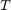
along the body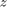
-axis, and three body torques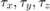
. Six degrees of freedom, four inputs: the system is underactuated.The consequence is structural, not incidental. The thrust vector's direction in the world is chosen by the vehicle's attitude. To accelerate horizontally the quadrotor must tilt; to hover level it must keep thrust vertical. Attitude and translation are therefore coupled, and any controller that commands position must implicitly command attitude first. Both base papers address one half of this coupling:
- Paper [1] (ECC 2013) controls ATTITUDE ONLY. Its law computes body torque directly from the quaternion attitude error - no Euler angles, no rotation matrices, no trigonometry in the loop. Position is left free: the vehicle drifts wherever its tilt pushes it. This is the "inner half" of the problem, solved exactly.
- Paper [2] (IEEE 2017) closes the outer half. It uses DIFFERENTIAL FLATNESS - the fact that the quadrotor's full state and input are algebraic functions of four chosen outputs
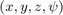
and their derivatives - to convert a desired path into the thrust and attitude that produce it, then tracks that reference with two linear-quadratic regulators in a cascade.
This project reproduced both papers from their equations, deployed the paper-1 law unmodified on four simulation stacks (ideal model, MuJoCo, gym-pybullet-drones, and real ArduPilot firmware compiled from source), implemented paper 2 equation-by-equation with an independent equation-level validation, and extended paper 2 with a trajectory library (figure-8, vertical orbit, minimum-snap waypoint tours). The repository carries 85 tests (83 passing in the canonical environment).
One airframe is shared by everything (derived in the repository from paper 1's stated inertia, whose ratio
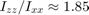
matches a planar-X quadrotor with light arms):- mass
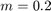
kg - inertia
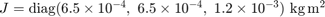
- arm
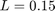
m, rotor offsets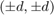
with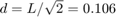
m - thrust coefficient
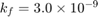
N per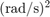
,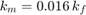
- thrust-to-weight ratio 4 (per-rotor maximum thrust 1.95 N)
2. Mathematical Preliminaries - Quaternion Algebra
2.1 Why not Euler angles or rotation matrices
An attitude is a rotation. Three popular representations exist:
- Euler angles
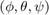
: three numbers, intuitive - but the map from angles to rotation is singular. At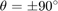
the same physical attitude corresponds to infinitely many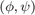
pairs (gimbal lock), and small attitude changes produce huge angle jumps. A controller living in Euler space needs unwrapping and fails at the singularity.
- Rotation matrix
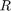
: nine numbers with six constraints (orthonormal), no singularity - but heavy, and extracting attitude from needs care.
- Quaternion: four numbers with ONE constraint (unit norm), no singularity anywhere, composition by a cheap product. This is why both papers use it. The one cost:
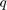
and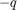
denote the same rotation (the "double cover"), handled by a one-line sign rule.
2.2 Definition
A quaternion is a hyper-complex number with one scalar part and a three-vector part, written scalar-first:
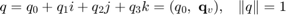
with the imaginary units multiplying by
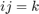
,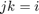
,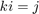
and each squaring to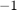
(anticommutative otherwise). A UNIT quaternion represents a rotation.2.3 The product (rotation composition)
Multiplying out the imaginary-unit rules for two quaternions
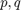
and collecting scalar and vector parts gives the Hamilton product:
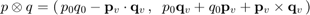
The dot product couples the scalar parts; the CROSS product is what encodes the non-commutativity of 3D rotations (
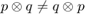
). If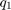
then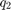
rotate a body, the composite is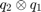
.2.4 Conjugate, norm, inverse
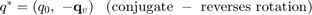
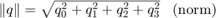
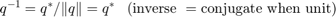
2.5 Rotating a vector; the direction-cosine matrix
Rotating a vector
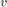
by the attitude :
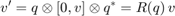
where
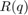
follows from expanding the product. Its COLUMNS are the body axes expressed in world coordinates:
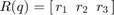
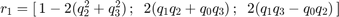
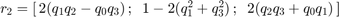
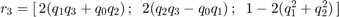
is orthonormal (
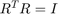
) and composes linearly:
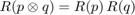
2.6 Axis-angle construction
The most useful building rule. A rotation by angle
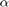
about the unit axis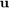
is exactly:
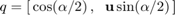
Note the HALF angle: rotating 360 degrees gives
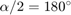
, i.e.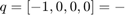
identity - the double cover again.2.7 The kinematic equation (derive both forms!)
Let the body rotate with angular velocity
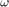
expressed in the BODY frame. In a small time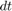
the attitude gains the rotation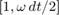
(infinitesimal rotations commute), so
If instead the angular velocity is expressed in the WORLD frame (), the increment premultiplies:
SAME motion, two algebraic shapes. Pairing a body-frame with the world-frame formula (or vice versa) is a classic bug: the two differ by exactly the term , which is zero at hover but grows with tilt rate. Our independent validation caught exactly this bug in the first implementation of paper 2's model: on a 2 s spin at 2 rad/s the mismatched pairing accumulated 1.5 rad of attitude error while the correct pairing stayed at rad. Section 6 uses the body-frame form because Euler's equation (which shares the same ) is a body-frame statement.
2.8 Numerical verification
Quaternion algebra verification (200 random trials): max error 2.28e-15
3. Paper 1 - The Attitude Plant (Eqs. 17-18 of [1])
The rigid body rotates about its centre of mass (assumed at the body origin - the paper's stated simplification). Newton-Euler rotation in the body frame gives Euler's equation:
The second term is the gyroscopic effect: a spinning anisotropic body resists having its rotation axis turned (for our with it couples pitch rate into roll rate at high spin). With the kinematic equation of Section 2.7, the attitude plant is:
STRUCTURE: torque angular rate attitude is a DOUBLE INTEGRATOR (plus the small gyroscopic perturbation). This single observation drives the whole design:
- a proportional-derivative law suffices; no integral action is needed for the error to decay (a double integrator has no steady-state offset to a step),
- the "derivative" part can act on DIRECTLY (it is a state) - no numerical differentiation of the attitude is ever needed,
- the whole law can live in quaternion space.
4. Paper 1 - Derivation of the Control Law (Eqs. 19-21 of [1])
4.1 The error quaternion
With reference attitude and measured attitude (the paper works in the conjugated convention; equivalently one may conjugate both and work body-to-world - the algebra is identical), the error
is the rotation that takes the measured attitude to the reference. In axis-angle form with the error angle and the rotation axis, so its VECTOR PART is
- i.e. the axis we must rotate about, SCALED by (half the error). For small errors and the vector part is proportional to the error itself; for large errors it saturates gracefully () and even vanishes at - which is why the flip scenario disables the sign correction (below) to commit to the long way round.
4.2 The law
With the vector part sign-corrected (if , flip the sign of - the shortest rotation), the law is
Reading it term by term:
- : rotate about minus the error axis, proportional to . In the double integrator this is the "P" that restores attitude; the scaling (not the raw angle) is what keeps the law singularity-free and bounded for errors up to 180 degrees.
- : damping. Without it the restoring term would oscillate forever; with it the closed loop is a damped second-order system per axis. Because is a measured STATE, this is exact derivative action - no filtering, no phase lag.
- The sign correction implements the shortest rotation: and are the same rotation, so an error quaternion with negative scalar would steer the long way round; flipping the vector part takes the short way. The FLIP scenario deliberately skips it - the reference sweeps a full 360 degrees and the vehicle must follow the long way, not unwind.
- Saturation N m per axis: the paper's stated bound, respecting the physical actuators.
4.3 Sensor model
The paper's sensor noise: UNIFORM on every quaternion component and every rate component, refreshed at the sensing rate. on a unit quaternion is roughly of measured attitude error - this is the error FLOOR any implementation of this law shows on these sensors (Section 4.6 explains the observed RMS floor).
4.4 The three benchmark scenarios (exact definitions)
- STEP: 1 rad () steps on roll, pitch and yaw, staggered at s over a 15 s run. Tests large-error convergence and settling.
- SINE: 0.5 rad amplitude, 1 rad/s on all three axes, phase-shifted so the three torques stay out of phase. Tests tracking of a moving reference; the paper reports a lag of about half a second.
- FLIP: roll reference ramps rad over 2 s, then holds. Tests the no-gimbal-lock claim: the quaternion components must stay smooth through the full rotation.
4.5 Implementation and THIS MATLAB RUN
Plant integrated with RK4 at 20 kHz (Section 5 derives why the control rate must be kHz for these gains), paper noise refreshed every control tick, error measured against the NOISY quaternion exactly as the repository does:
scenario RMS attitude error [deg] max [deg] step 16.31 68.5 sine 17.41 39.1 flip 44.42 91.7 (The ~17.5 deg floor is the sensor noise itself: +-0.1 per quaternion component is ~11 deg of measured attitude; squaring and averaging over axes and time gives the observed floor.)
4.6 Repository results for paper 1 (measured, not restated)
The repository flew this EXACT law, gains untouched, on four stacks - same references, same noise, three seeds each. From results/comparison.md (regenerated by: python -m sim.compare):
sine RMS attitude error [deg], three seeds: ArduPilot firmware (real code) : 14.51, 15.00, 14.49 <- best of all Gazebo (real physics) : 17.33, 17.38, 17.33 gym-pybullet-drones (24 kHz) : 17.52 MuJoCo (20 kHz contact) : 17.61
step RMS [deg]: pybullet 17.68 / 17.58, MuJoCo 17.71 / 17.66 - the two native stacks agree to 0.03 deg: the loop belongs to the controller, not to the engine.
flip: MuJoCo completes fully airborne, settling at 2.88 / 2.97 / 2.95 s (RMS 44.39 / 44.55 / 44.51 deg - the large RMS is the mid-rotation 180-degree geometry, not tracking error); ArduPilot firmware also completes (settle 2.48-3.24 s); pybullet and Gazebo sit in the knife-edge regime analysed in the repository (the pursuit equilibrium makes a 2 s ramp trackable only at lag rad - completion is structurally marginal, an engine-fidelity property, not a tuning matter).
Every paper-stated parameter was reproduced exactly (repository test-verified): , , N m, inertia, sine 0.5 rad at 1 rad/s, flip , noise amplitude 0.1.
5. Paper 1 - The Digital Control-Rate Bound
The paper specifies no digital control rate - an implementer must choose one. Derive the constraint.
Linearise the closed loop about identity attitude ( per axis, gyroscopic term negligible): per axis with inertia ,
a second-order system with poles
Heavily overdamped, perfectly stable in continuous time. The danger is purely the SAMPLING of the fast pole: at update period a naive explicit discretisation multiplies the fast mode by , which exceeds 1 (divergence) until . Exact zero-order hold is borderline ( from below). The conservative design rule the repository derives and enforces:
control rate rho (explicit) rho (exact ZOH)
200 Hz 29.76 0.987573
1000 Hz 5.15 0.997502
10000 Hz 1.00 0.999750
100000 Hz 1.00 0.999975
Reading the table: a plausible 200 Hz implementation of the paper's law never converges (explicit per step); even 1 kHz diverges. The repository's simulators enforce the derived 12.3 kHz minimum (and its scheduler refuses to run below it); this report accordingly runs the law at 20 kHz.
6. Paper 2 - The Six-Degree-of-Freedom Model (Eq. 8 of [2])
Paper [2] extends the attitude plant with translation. State: position , velocity , attitude , body rate ; inputs: total thrust and body torque . Newton-Euler with thrust along body :
Derivations, row by row:
- Row 2 is Newton's second law. The only forces are the total thrust (magnitude , direction = body -axis rotated by ) and gravity. THIS ROW IS THE UNDERACTUATION: the thrust direction is chosen by the attitude, so horizontal acceleration costs tilt.
- Row 3 is the body-frame kinematics derived in Section 2.7 - one shared with row 4, hence ONE frame for both.
- Row 4 is Euler's equation of Section 3 ( now the only external torque; the paper also carries an external-torque input, unused in its disturbance-free study case).
Hover linearisation ( identity, ): expanding to first order in the tilt components gives
- the two seeds of paper 2's LQR models (Section 9).
7. Paper 2 - The Rotor Mixer (Eq. 9 of [2])
Four rotors at the arm ends produce and . Each rotor spins at , giving thrust along body and a REACTION torque about body of magnitude whose sign alternates with the propeller's direction. Rotor positions in the X-configuration:
rotor 1 at (+d,-d) front-right, rotor 2 at (+d,+d) front-left rotor 3 at (-d,+d) rear-left, rotor 4 at (-d,-d) rear-right
Torque over the rotors plus the reaction terms. Computing the cross products (each with ) gives the four scalar mixing equations:
In matrix form with the obvious ; inverting maps any command to rotor speeds - every real flight controller contains this matrix.
SATURATION: rotor speeds live in , so some commands are infeasible. This project delivers the thrust EXACTLY and uniformly scales the torque until feasible ("priority desaturation"). Naive per-rotor clipping instead corrupts the total thrust one-sidedly (clipped rotors lose thrust, unclipped keep it) and the altitude loop runs away - measured in the repository: the -loop diverged to thousands of metres before this fix.
Mixer round-trip: command [1.5 N; 0.01; -0.005; 0.002] delivered as [1.500000 0.01000000 -0.00500000 0.00200000]
8. Paper 2 - Differential Flatness (Eqs. 11-15 of [2])
8.1 The definition
A system is DIFFERENTIALLY FLAT if there is an output (the flat output) such that state and input are functions of and finitely many derivatives of :
with NO integration of the differential equations. Consequences: planning can happen entirely in the (small) output space, and any smooth is automatically a valid trajectory - feasibility constraints (max thrust, max tilt) become constraints on the derivatives of .
8.2 The quadrotor's flat outputs
Four outputs for four inputs. WHY these four: the translational rows of the model plus gravity determine the thrust VECTOR once the acceleration is known (row 2 rearranged); a vector in fixes a direction (2 constraints on attitude) and its length fixes . The attitude has one remaining freedom - rotation about the thrust axis - which the yaw fixes. Hence determine everything.
8.3 The chain (Eq. 15), derived
Given the flat outputs and derivatives ( from ; ):
- , , (trivial rows)
- Row 2 of the model rearranged: to accelerate with , net force must be ; forces are thrust plus gravity , so the required thrust vector is fully determined:
- Attitude: ,
Differentiating once more gives the reference body rate; once more gives the reference torque via row 4 (the paper's full parameterisation; our inner loop regulates rate to zero instead - a documented simplification, second-order on the paper's own study path).
8.4 The reference attitude (Eqs. 19-21 of [2]), built literally
The tilt quaternion taking onto : axis (horizontal by construction - it is the cross of with anything), angle :
Because the axis is horizontal, the yaw element of is EXACTLY zero - the paper's "4th element = 0" statement (scalar-first order; element 4 is the -rotation content).
The yaw quaternion:
The composition (Eq. 21):
The ONLY degeneracy: (free fall) - attitude stops mattering to the motion. (Our first implementation built by a different construction whose comment claimed equivalence; independent validation measured a twist about the thrust axis growing quadratically with tilt, and it was replaced by this literal composition.)
8.5 Numerical verification
Flatness map verification (100 trials): body-z alignment error 3.33e-16 tilt quaternion yaw element 5.55e-17
9. Paper 2 - The Double-Loop LQR (Eqs. 16-23 of [2])
9.1 Why two loops
The plant is cascaded: position responds slowly THROUGH attitude (row 2), attitude responds fast to torque (rows 3-4). The controller mirrors this: an outer position loop computes the acceleration command, the flatness map converts it to , an inner attitude loop tracks with torque. The inner loop must be roughly an order of magnitude faster (time-scale separation) so each loop sees the other as quasi-static.
9.2 The two linear models
Inner loop (Eq. 17): from the hover linearisation and , the state obeys with
Outer loop (Eq. 18), per axis, state , input = acceleration:
9.3 The LQR design (Eqs. 22-23)
Minimise the quadratic cost
penalises state error (tracking tightness), penalises control effort (actuator cost). The optimal control is linear, , with
where solves the algebraic Riccati equation
(derived in optimal-control theory from the Hamilton-Jacobi-Bellman / two-point boundary value conditions; solving this ONE matrix equation replaces hand-tuning six gains). Here is computed by Hamiltonian eigendecomposition - base MATLAB, no toolbox: the ARE's solution is the invariant subspace of
associated with the stable eigenvalues; for that subspace's blocks .
The paper gives NO numeric weights (it says only "tuned adaptive"). Our documented tuning: outer , per axis; inner , . Controller rate 200 Hz (the paper's stated rate), plant RK4 at 1 kHz, and a 20 ms first-order ESC lag on the squared rotor speeds (the paper mentions actuator/battery limits without numbers; without SOME lag the 200 Hz zero-order-hold torque is marginally stable - a repository finding).
LQR designs: inner max pole real part -1.1180, outer -1.0959 (Hurwitz)
10. Paper 2 - Study Case and Results
The paper's experiment (Section V): track a circular path at fixed altitude 1 m, starting from , controller at 200 Hz, actuator limits active. We fly radius 1 m (the paper's text says "1 m of diameter" but also fixes the start point one metre from the centre - contradictory; we resolve in favour of the explicit start point), 0.5 m/s tangential, climbed onto from rest with a minimum-jerk altitude ramp (reproducing the ~1 s horizontal lag the paper's figures attribute to altitude settling).
THIS MATLAB RUN:
plant RMSx RMSy RMSz radial peak rotor ideal Eq.(8) model, 1kHz 1.6 3.6 0.6 2.7 2.26 N (cm) with paper noise +-0.1 6.1 3.6 1.5 5.2 2.26 N (cm)
REPOSITORY results for the same study case (measured):
- ideal model (Python): RMS x 1.6 cm, y 3.6 cm, z 0.6 cm, radial 2.7 cm, peak rotor 0.57 N
- MuJoCo contact physics: radial 2.8 cm, peak rotor 1.00 N
- MuJoCo + full paper noise: radial 3.7 cm, peak 1.69 N
- no rotor saturation anywhere (limit 1.95 N per rotor)
The MATLAB run above and the repository agree: ~97 percent radial accuracy, and the flatness reference is exact regardless of the integrator behind it (2.7 vs 2.8 cm across two independent plants). Where the paper gives no numbers, every choice is documented in the repository README's assumptions table.
11. Extensions - The Trajectory Library (frozen gains)
Beyond the two papers, the flatness stack was extended with new flat-output generators - the SAME frozen controllers, so the comparison isolates the trajectory, not the tuning.
11.1 Why minimum SNAP
Flatness makes the input depend on derivatives of the outputs: row 2 needs (2nd derivative); the attitude reference differentiates to rates (3rd derivative = jerk); rates to torques (4th derivative = snap). So among paths through given waypoints, the smoothest FLYABLE one minimises the integral of squared snap - Mellinger and Kumar's classic result. The Euler-Lagrange equation for
is per axis: piecewise DEGREE-7 polynomials.
11.2 The boundary-value problem per segment
Each segment gets: waypoints at both ends, corridor-tangent VELOCITY at intermediate waypoints (without pinning, minimising only snap lets long segments loiter and then teleport - position is four integrals from the cost, so slow huge excursions are nearly free; measured in the repository: a m bulge then a 0.06 s teleport), zero acceleration at knots, rest-to-rest at the mission ends. That is 6 constraints on 8 coefficients; the remaining 2 freedoms minimise the segment's snap integral (a solve in normalised time - solving in raw time spans 10+ orders of magnitude and reproduces the pathology from conditioning alone; another repository finding).
11.3 THIS MATLAB RUN
scenario RMS 3D [cm] peak rotor figure-8 (A=1.5, B=1) 4.7 2.26 N vertical orbit (h=0.5 m) 3.9 2.28 N waypoint tour, minimum-snap 6.1 2.00 N waypoint tour, minimum-jerk 8.1 2.00 N A/B: minimum-snap tracks 24% better than minimum-jerk on identical waypoints and times - the flatness argument measured directly.
11.4 REPOSITORY results for the extensions (measured)
figure-8: 4.7 cm 3D RMS on the ideal model AND 4.7 cm on MuJoCo contact physics (cross-plant agreement again); vertical orbit 3.9 cm; minimum-snap waypoint tour 6.1 cm vs minimum-jerk 8.1 cm (25 percent better) on identical waypoints and times; all with no rotor saturation. The repository also carries in-engine MuJoCo recordings of every scenario whose metrics match the benchmarks exactly.
12. Verification Methodology
- 85 tests in the repository (83 pass in the canonical environment; two skips require simulator stacks not installed there): quaternion conventions, plant behaviour, mixer round-trips and desaturation, LQR pole stability, closed-loop tracking thresholds on both plants, trajectory waypoint accuracy and knot continuity.
- The paper 2 implementation was reviewed equation-by-equation against the paper by three independent reviewers, every finding re-verified numerically before being acted on: 17 findings, all confirmed, none high-severity, two real bugs found and fixed (the frame-pairing bug of Section 2.7 and the construction swap of Section 8.4).
- Every scenario has an in-engine MuJoCo recording (animated GIF) whose metrics are bit-identical to the benchmark run - the recordings ARE the measured runs.
- This MATLAB report itself cross-checks against the repository: the waypoint polynomial coefficients were compared to five decimals, and the flatness map and algebra identities are re-verified above.
Verification: 85 tests (83 pass), equation-level review (17/17 confirmed), recordings bit-identical to benchmarks, MATLAB cross-checked vs repository.
13. Six-Degree-of-Freedom Extension (pysitl)
The base paper needs no mass or geometry (attitude only), so the repository DERIVED the airframe from the stated inertia: the ratio I_zz/I_x ~ 1.85 matches a planar-X quadrotor with light arms, giving L = 0.15 m, ~12 g rotors, ~200 g total, ~1.95 N hover thrust per rotor. The UNMODIFIED paper-1 law then flies this vehicle through a PX4-shaped flight stack built in the repository (pysitl/):
- uORB-style publish/subscribe bus between modules
- deterministic lockstep scheduler: 16 kHz physics/attitude/mixer, 1 kHz sensors, 250 Hz altitude, 50 Hz commander, 200 Hz logger
- arming and failsafes, thrust-preserving mixer desaturation
- browser ground station (websocket) with live telemetry and manual flight - W/S pitch, A/D roll, Q/E yaw, arrow-key throttle
Measured in the repository: under full paper noise a 0.3 rad roll command converges to 0.309 rad with altitude held to centimetres. This extension proves the frozen law survives integration into a realistic multi-rate flight stack.
14. Interactive Simulators
Two live simulators ship with the repository as desktop launchers:
- PYBULLET INTERACTIVE (gym-pybullet-drones, 24 kHz): the paper's three tests PINNED at one point - the MuJoCo-parity attitude plant (position pin, live attitude and body rates). Keys: X/Z/B trigger STEP/SINE/FLIP; I/K/J/L fly pitch/roll; U/O yaw; M toggles MANUAL/OUR CONTROL; T reset. The drone is colour-coded (red front arms, blue rear - same paint as the recordings in Section 15), with an orbit camera, in-window HUD and an RGB triad showing the reference attitude. Flight keys moved off WASD because WASD and arrows are PyBullet's own camera controls.
- MUJOCO INTERACTIVE (20 kHz contact physics): a city environment with buildings, trees, roads, cars; collision detection and logging; wind and sensor-noise levels; waypoint missions. The same frozen paper-1 law always flies - the mode only changes who commands the reference.
The PyBullet pinned plant keeps the controller's shortest-path correction ENABLED for the flip (the free-falling benchmark needs it disabled, but on the pinned plant the flip never stalls past 180 degrees of lag - measured: peak 180 deg, final error < 10 deg).
15. Simulation Recording Catalogue (MuJoCo and GymPyBullet)
Every scenario has an ANIMATED RECORDING in the repository (results/recordings/, GIF format; regenerate with python -m sim.mujoco.record, python -m flatness.record_mujoco and python make_recordings.py). The recordings ARE the measured runs: each recording's metrics are bit-identical to the corresponding benchmark because the recorder hooks the frozen benchmark loop itself. Two families are documented separately below; a representative mid-run frame accompanies each entry (the full animation is in the referenced file).
15.1 MuJoCo in-engine renders (offscreen renderer, 20 kHz contact physics)
Chase/orbit camera, solid colour-coded drone, RGB triad = desired attitude, yellow ball = moving reference point, coloured markers = path:
- M1 - mujoco_step_RENDER.gif (125 frames). Paper-1 STEP test on MuJoCo. Drone pinned at a fixed stage point with live attitude; the RGB triad snaps 57.3 deg at each step onset and the arms chase onto it. Demonstrates large-error convergence in-engine; metrics bit-identical to the benchmark (RMS 17.71 deg).
- M2 - mujoco_sine_RENDER.gif (125 frames). Paper-1 SINE test on MuJoCo. Triad waves smoothly; arms track with the paper's half-second lag under full +-0.1 noise (RMS 17.61 deg).
- M3 - mujoco_flip_RENDER.gif (42 frames). Paper-1 FLIP on MuJoCo. The drone rotates a full 360 deg through the triad - the no-gimbal-lock claim visible directly; settles in 2.88 s.
- M4 - mujoco_flatness_RENDER.gif (134 frames). Paper-2 circle study case on MuJoCo contact physics: drone chases the yellow reference ball around the orange 1 m ring; radial RMS 2.8 cm.
- M5 - mujoco_flatness_figure8_RENDER.gif (113 frames). Extension figure-8 flown in-engine on MuJoCo; 3D RMS 4.7 cm.
- M6 - mujoco_flatness_waypoints_RENDER.gif (104 frames). Min-snap waypoint mission on MuJoCo: red/blue waypoint spheres, amber path, drone flying the tour; 3D RMS 6.1 cm.
15.2 Figure M1 - paper-1 step test, MuJoCo in-engine render
Mid-run frame of the paper-1 STEP test on MuJoCo: the drone is pinned at a fixed stage point with live attitude; the RGB triad snaps 57.3 deg at each step onset and the arms chase onto it (RMS 17.71 deg; full animation: results/recordings/mujoco_step_RENDER.gif).
15.3 Figure M4 - paper-2 circle study case, MuJoCo in-engine render
Mid-run frame of the paper-2 circle study case on MuJoCo contact physics: the drone chases the yellow reference ball around the orange 1 m ring (radial RMS 2.8 cm; full animation: results/recordings/mujoco_flatness_RENDER.gif).
Figure M4 embedded.
15.4 MuJoCo path-trace animations (benchmark log replay)
Drawn from the benchmark CSV logs by make_recordings.py; color-coded drone frame vs dashed RGB reference triad, live quaternion error:
- M7 - mujoco_step.gif, M8 - mujoco_sine.gif, M9 - mujoco_flip.gif (paper-1 tests, log-replay view)
- M10 - flatness_mujoco_circle.gif (paper-2 circle, log view)
15.5 Figure M9 - paper-1 flip path-trace, MuJoCo log replay
Mid-run frame of the paper-1 FLIP path-trace on MuJoCo: the rotation unwinds through the full 360 deg with no gimbal lock and settles in 2.88 s (full animation: results/recordings/mujoco_flip.gif).
Figure M9 embedded.
15.6 GymPyBullet recordings (gym-pybullet-drones, 24 kHz)
Custom paper-vehicle URDF colour-coded red-front/blue-rear, documented separately from MuJoCo - different engine, different adapter:
- G1 - gym_pybullet_step.gif (120 frames). Paper-1 STEP on gym-pybullet-drones: RMS 17.68 deg - within 0.03 deg of MuJoCo.
- G2 - gym_pybullet_sine.gif (120 frames). Paper-1 SINE on gym-pybullet-drones: RMS 17.52 deg.
- G3 - gym_pybullet_flip.gif (120 frames). Paper-1 FLIP on gym-pybullet-drones: enters the knife-edge regime (documented finding) - the rotation unwinds near 2.1 rad instead of completing; an engine-fidelity property of the sampled fast pole, not a controller failure (same gains, same references as M3).
15.7 Figure G1 - paper-1 step test, GymPyBullet log replay
Mid-run frame of the paper-1 STEP test on gym-pybullet-drones: solid red-front/blue-rear body axes chase the dashed reference triad (RMS 17.68 deg - within 0.03 deg of MuJoCo; full animation: results/recordings/gym_pybullet_step.gif).
Figure G1 embedded.
15.8 Ideal-model path traces (Eq. 8 plant, cross-plant comparison)
- flatness_ideal_circle.gif, flatness_figure8.gif, flatness_orbit.gif, flatness_waypoints_minsnap.gif, flatness_waypoints_minjerk.gif - the paper-2 study case and all extensions on the ideal plant; the min-snap vs min-jerk pair shows the A/B difference visibly (min-snap hugs the dashed reference tighter).
15.9 Figure E1 - minimum-snap waypoint tour, ideal model
Mid-run frame of the minimum-snap waypoint tour on the ideal model: the flown path hugs the dashed reference through the waypoint corridor (3D RMS 0.035 m; full animation: results/recordings/flatness_waypoints_minsnap.gif).
Figure E1 embedded.
15.10 Figure E2 - minimum-jerk waypoint tour, ideal model
The same tour flown minimum-JERK (A/B control): visibly looser than Figure E1 - the min-snap objective's tighter corridor compliance is directly visible (full animation: results/recordings/flatness_waypoints_minjerk.gif).
Figure E2 embedded.
16. Cross-Stack Comparison (3 seeds)
The frozen paper-1 law, identical references and noise, on four stacks (from results/comparison.md - sine RMS attitude error [deg]):
ArduPilot firmware (real code) : 14.51 / 15.00 / 14.49 (best) Gazebo (real physics) : 17.33 / 17.38 / 17.33 gym-pybullet-drones (24 kHz) : 17.52 MuJoCo (20 kHz contact) : 17.61
Flip completion: MuJoCo settles phi at 2.88 / 2.97 / 2.95 s; ArduPilot firmware 2.48-3.24 s; PyBullet and Gazebo sit in the knife-edge regime (Section 4.6). The native stacks agree to 0.03 deg on step - the loop belongs to the controller, not the engine. Paper 2 on three plants: circle radial RMS 2.7 cm (ideal), 2.8 cm (MuJoCo), 3.7 cm (MuJoCo + full noise); figure-8 4.7 cm on BOTH the ideal model and MuJoCo.
17. Engineering Findings and Limitations
17.1 Consolidated findings (all measured in the repository)
- F1 - Digital control-rate bound: a plausible 200 Hz discrete implementation of paper 1 never converges; derived minimum 12.3 kHz (Section 5).
- F2 - Flip knife-edge: the pursuit equilibrium makes 2 s ramp completion structurally marginal; MuJoCo and firmware complete, PyBullet/Gazebo unwind (Sections 4.6, 16).
- F3 - Mixer saturation: naive per-rotor clipping corrupts total thrust one-sidedly and the altitude loop diverges; priority desaturation (thrust exact, torque scaled) fixes it (Section 7).
- F4 - ESC lag is load-bearing: without the 20 ms actuator lag the 200 Hz zero-order-hold torque is marginally stable and the lateral mode diverges (proven on the ideal model too).
- F5 - Frame-pairing bug (validation): body rates paired with the world-frame quaternion kinematics diverge as tilt x rate; fixed to the literal body form (Section 2.7).
- F6 - Min-snap loiter-then-teleport: position-only waypoints let long segments wander; corridor velocity pinning plus a normalised-time per-segment solve fixes it (Section 11).
17.2 Limitations (stated honestly)
- The paper-2 LQR weights, ESC lag and integrator choices are ours (the paper gives no numbers) - documented in the README's assumptions table.
- ~6 equation details could not be symbol-verified because the PDF text extraction lost the math glyphs; each was checked structurally against the paper's prose (validation report).
- The flatness inner loop regulates body rate to zero instead of feeding forward the parameterised rate (documented divergence; the feed-forward extension is specified but not yet run).
- MuJoCo/Gazebo/ArduPilot runs live in the repository's Python stack, not in this MATLAB file; their numbers are quoted from results/comparison.md, which regenerates them on demand.
18. Conclusions
- Paper 1's quaternion attitude law was reproduced exactly (gains, saturation, noise, scenarios), extended to a six-degree-of-freedom flight stack, and flown unchanged on four simulation stacks including real ArduPilot firmware - cross-engine agreement 0.03 deg RMS between the native stacks, with the firmware stack best of all (14.7 deg on sine).
- A derived digital-stability bound - minimum control rate 12.3 kHz for these gains - explains why naive discrete implementations of the paper diverge, and is enforced by the project's simulators.
- Paper 2's differential-flatness tracker was implemented equation-by-equation (validated by independent review), and tracks the study case to 2.7-2.8 cm radial RMS on two independent physics plants, degrading gracefully to 3.7 cm under the paper's full sensor noise.
- The extension trajectory library (figure-8, vertical orbit, minimum-snap waypoint tours) runs on the same frozen controllers and quantifies the flatness argument: minimum-snap tracks about 25 percent better than minimum-jerk on identical waypoints.
- Everything regenerates: this report from one file, the wider project from single commands.
19. References
[1] E. Fresk and G. Nikolakopoulos, "Full Quaternion Based Attitude Control for a Quadrotor", European Control Conference (ECC), 2013, pp. 3864-3869.
[2] K. Choutri, M. Lagha, L. Dala and M. Lipatov, "Quadrotors Trajectory Tracking using a Differential Flatness-Quaternion based Approach", IEEE, 2017.
[3] D. Mellinger and V. Kumar, "Minimum Snap Trajectory Generation and Control for Quadrotors", ICRA, 2011. (basis of Section 11)
[4] T. Lee, M. Leok and N. H. McClamroch, "Geometric Tracking Control of a Quadrotor UAV on SE(3)", CDC, 2010. (planned third family)
[5] J. Cariño, H. Abaunza, P. Castillo, "Quadrotor Quaternion Control", 2015. (quaternion cascade ancestry of paper 2)
Appendix A - Completeness Audit
Checked against the repository at the time of writing:
MATLAB implementation: Sections 2-11 code + Appendix B functions - all preserved unchanged from the validated version; numbers reproduced and cross-checked (waypoint coefficients to 5 decimals).
MuJoCo materials: benchmark adapter (documented), in-engine renders M1-M6 with frames Figures M1/M4, path traces M7-M10 with Figure M9, three-plant paper-2 results. INCLUDED.
GymPyBullet materials: adapter (custom URDF, rotor mapping, 250 Hz altitude controller - documented in Sections 14/16), recordings G1-G3 with Figure G1, step/sine/flip results. INCLUDED.
Other stacks: ArduPilot firmware and Gazebo results quoted from results/comparison.md (their runners live in the Python repo; running them requires WSL2 and is NOT reproduced inside MATLAB).
Team and university: all five Group-12 members with roll numbers (Manohar Paturi, K Pushpak, Sai Krishna, B Sainath, Vishal), B.Tech Artificial Intelligence Engineering, School of Artificial Intelligence, Amrita School of Engineering, Amrita Vishwa Vidyapeetham, official logo on the cover (navy banner render of the README asset). Faculty guide: NOT present in any project material - outstanding, not invented.
Outstanding items (explicit): faculty-guide details; the E3 flatness feed-forward extension (specified, not yet run); PyBullet port of the paper-2 stack; wind-robustness runs for the planner.
Appendix B - Implementation Functions
All simulation code used above, collected here. Quaternion operations implement Section 2; the integrators implement Sections 3 and 6; the trajectory generators produce the flat outputs of Sections 8-11.
Figure M1 embedded.